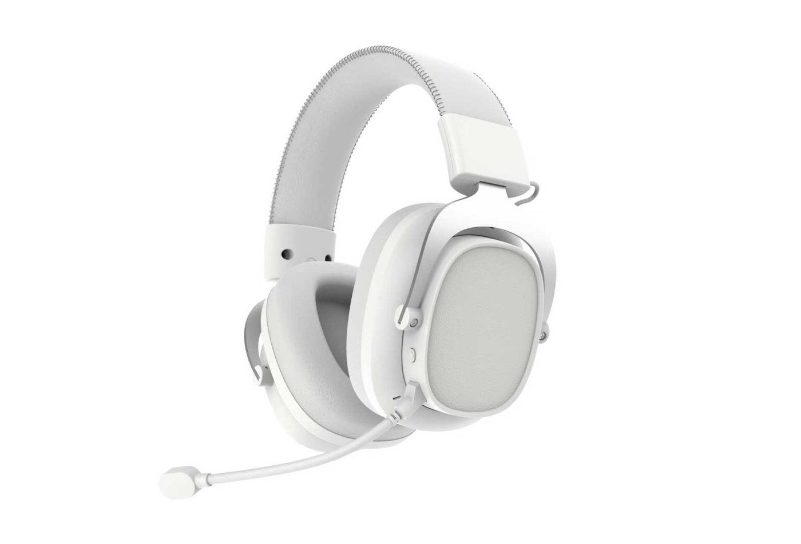

Gaming headset samples
Use this route for wired RGB, 2.4G wireless, Bluetooth or tri-mode gaming headset projects.

Audio product sample request
Importers, distributors and private-label audio brands can use this page to prepare a focused TALRIVO sample inquiry. Start with the product category, model, target market, use case, quantity range and timing; confirm logo and packaging scope after the base product is reviewed.

Short answer
Choose a product direction, share the commercial context and confirm the exact sample version before discussing shipment or branding details.
Category routes
A focused category helps TALRIVO reply with a practical model direction instead of a broad catalogue answer.
Use this route for wired RGB, 2.4G wireless, Bluetooth or tri-mode gaming headset projects.
Use this route for in-ear, open-ear or earclip Bluetooth earbud directions and charging-case review.
Use this route for portable speaker appearance, lighting, logo area, packaging and gift-channel discussion.
Use this route for mobile accessory audio, connector details, cable structure and packaging review.
First inquiry checklist
These fields match the information requested by the TALRIVO contact form and reduce unnecessary follow-up.
Name the selected model or product category and explain whether the project needs wireless, wired, Bluetooth, Type-C or another connection direction.
Share the destination country or region, customer type and whether the product is planned for retail, online sales, distribution or a brand collection.
Provide the estimated bulk-order quantity range and when the team needs to evaluate the sample.
State whether the first sample can use the standard version, then list later logo, packaging, manual language or document requirements.
G941 sample example
G941 provides a concrete reference because the current TALRIVO page includes supplied product images, visible receiver and microphone details, color notes, an official product showcase and a separate microphone demonstration.
State that the inquiry is for the G941 tri-mode wireless gaming headset rather than a general wireless headset request.
Ask to confirm the sample version, connection direction, receiver, boom microphone, color direction and included accessories.
Share the destination market, buyer channel, intended product position and estimated order quantity range.
Review the base sample first, then discuss the earcup logo area, packaging, manual language and other model-level options.
After the sample arrives
The request page collects commercial and model information. The evaluation guide covers the physical and functional review before a bulk-order decision.
Verify the model identity, connection version, receiver or cable set, microphone arrangement and included accessories.
Review wearing fit, cushion feel, headband adjustment, hinges, controls, cable strain relief and visible assembly details.
Check sound direction, microphone use, pairing or wired connection behavior and controls in the buyer's intended scenario.
Record the packaging, labeling, manual language, accessory and document questions that apply to the confirmed version and market.
Purchasing routes
Sample request FAQ
Include the target market, sales channel, selected model or product category, intended use, estimated order quantity, sample timing, branding direction, packaging questions and any product documents that need to be checked.
An exact model number is helpful but not required for the first message. Buyers can start with a focused category and use case, then review a small model shortlist before confirming samples.
A compact comparison shortlist can be discussed across gaming headsets, TWS earbuds, Bluetooth speakers, Type-C earphones or Bluetooth headphones. The available models and practical sample scope should be confirmed before shipment planning.
Confirm the base model and sample version first. Logo placement, color direction, packaging, manual language and accessories can then be reviewed against that product.
Sample availability, version, destination and timing must be confirmed for the selected model and project. Buyers should include the destination market and required timing in the inquiry.
Share the selected model or category, target market, sales channel, intended use, quantity range, required timing and later branding needs. TALRIVO can then review the model-specific sample scope.